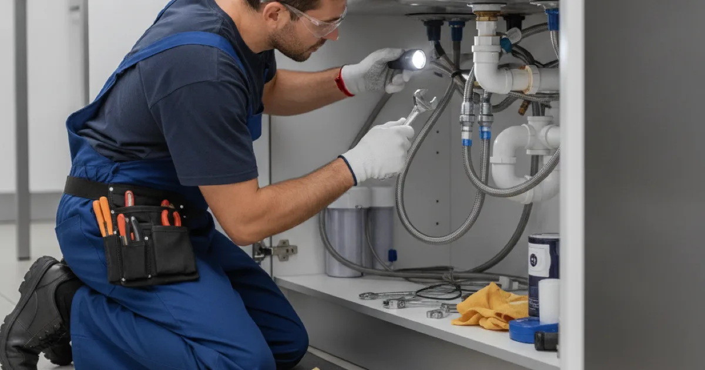
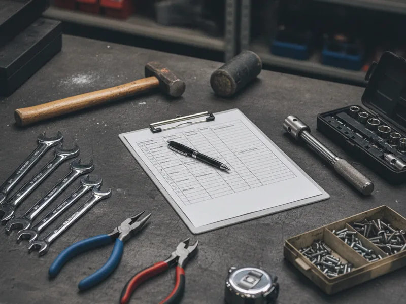

Plumbing Maintenance in Armonk, NY
Most plumbing emergencies give some warning first, if anyone's looking. Regular maintenance means we check the things homeowners usually don't think to check, so small problems get handled before they turn into an emergency call.
- Licensed & Insured
- Upfront Pricing
- 15+ Years of Experience
- Locally Owned & Operated

Why plumbing maintenance matters
Most homeowners only call a plumber once something's already gone wrong. A regular maintenance visit flips that around — we catch the slow drip, the aging valve, or the water heater that's starting to struggle before it becomes a flooded basement or a cold shower on a Monday morning.
It also tends to be a lot less stressful, and often less expensive, than waiting for a full breakdown and dealing with it as an emergency.
What we check
We look at supply line connections, shutoff valves, water heater condition, visible pipe for corrosion or wear, drain flow throughout the house, and sump pump function if you have one. We also check for slow leaks in spots that are easy to overlook, like behind toilets and under sinks.
If you have a septic-connected home, we'll look at how your plumbing is interacting with that system as part of the visit.

Our process
We walk through your home systematically, checking each system on our list and flagging anything that needs attention now versus something worth watching. You get a clear rundown afterward, not a list of scary-sounding problems designed to upsell you.
If we find something, like catching a small pipe issue before it bursts, we'll explain exactly what's going on and give you a clear price before doing any additional work.
A seasonal checkup before winter
A lot of our maintenance visits in Armonk and the surrounding towns happen in the fall, before the first hard freeze of the season. Cold-weather pipe issues are common in this area, and a checkup beforehand — checking your water heater's condition each year and confirming exposed pipes are protected — catches problems while they're still easy to fix.
This Old House publishes a helpful This Old House's plumbing maintenance guidance that covers a lot of the same ground we go through during a visit, if you want a sense of what to expect.
When to call a pro
Call us if it's been a while since anyone's looked at your plumbing system as a whole, you're heading into fall and want to get ahead of winter, or you have a sump pump that hasn't been checked recently. Testing your sump pump before storm season is one of the more overlooked maintenance items, and one of the most costly to skip if it fails at the wrong time.
Maintenance is part of our preventive plumbing service offerings — see our complete list of plumbing services for everything else we handle.
Frequently asked questions
How often should I have my plumbing checked?
An annual visit, often in the fall before winter, is a reasonable starting point for most homes. Older homes or ones with a history of issues may benefit from checking more often.
What's included in a plumbing maintenance visit?
We check supply lines, shutoff valves, your water heater, visible pipe condition, drain flow, and sump pump function, among other things, depending on your home's setup.
Can maintenance really prevent a plumbing emergency?
Not every emergency is preventable, but many of the ones we see, like a frozen pipe or a failed sump pump, show warning signs beforehand that a maintenance visit can catch.
Do you check septic-connected plumbing during maintenance?
Yes, if your home is septic-connected, we look at how the plumbing side is functioning as part of the visit.
How long does a maintenance visit take?
It depends on the size of your home and how many systems we're checking. We'll give you a time estimate when you schedule.
Will you try to sell me repairs I don't need?
No. We tell you honestly what we find and what actually needs attention, without pressure to approve work that isn't necessary.